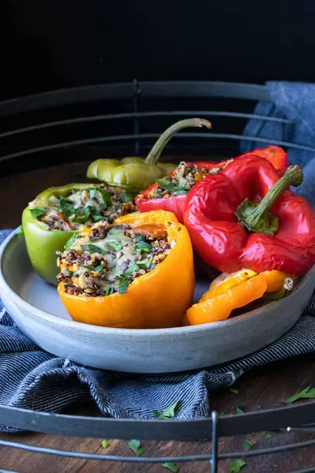

Vegan Gluten-Free Stuffed Peppers

Ingredients
- 8 red, yellow, orange or green peppers (, medium in size)
- 3 cups cooked quinoa
- 3 cloves garlic (, chopped)
- 1 ½ cups cooked chickpeas (, rinsed and drained (about one 15 ounce can)
- 2 cups chopped mushrooms
- 1 cup fresh chopped tomatoes
- ½ cup fresh chopped parsley
- 2 teaspoons dried thyme
- 1 teaspoon sea salt
- Drizzle of oil for sautéing (, or broth if oil free)
- Sprinkle of dairy-free cheese (, optional)
Steps
- Preheat oven to 350 F/ 175 C
- Cut the tops off of the peppers and take out the seeds.
- Using a food processor, coarsely chop the chickpeas until crumbled like a meaty texture.
- Set aside. Then chop the mushrooms in the same way.
- Sauté the garlic in broth or oil until fragrant, about 2 minutes.
- Add the mushrooms and cook until the liquid has evaporated, about 5 minutes.
- Add the tomatoes, parsley, thyme and salt and sauté until the tomatoes soften, about 5 minutes.
- Add in the quinoa and chickpeas and mix until heated through. About 1-2 minutes.
- Fill the peppers with the mixture and put on the tops. You can also drizzle with a tiny bit of oil if you want.
- Bake for about 30-35 minutes until just browning on top.
- Serve and enjoy!
Recipe by Anjali Shah, from The Picky Eater. Saved here for personal use; the original has the full notes, tips and photos. Open original